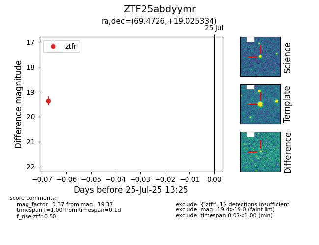

Target ZTF25abdyymr at 2025-08-06 17:27, see:
FINK: fink-portal.org/ZTF25abdyymr
Lasair: lasair-ztf.lsst.ac.uk/objects/ZTF25abdyymr
ALeRCE: alerce.online/object/ZTF25abdyymr
alt names
ZTF25abdyymr (ztf,fink)
coordinates:
equatorial (ra, dec) = (69.4726,+19.02533)
galactic (l, b) = (179.1867,-18.32181)
photometry
last ztfr=19.37
1 ztfr detections
